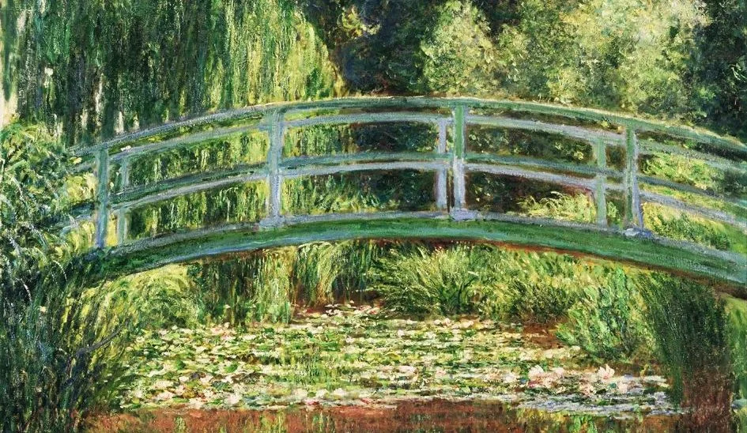

Il ponte giapponese è un dipinto realizzato a olio su tela nel 1899 circa dal pittore francese Claude Monet. Misura cm 89,5x115,3. Il soggetto è ispirato al giardino in stile giapponese del pittore presso Giverny, dove egli coltivava diverse piante esotiche che decoravano un ponticello di legno. Lo dipingeva in varie ore del giorno per vedere la luce del sole come cambiava. Le pennellate sono veloci, intense e in direzioni diverse in modo da dare l'impressione del movimento. La luce si riflette sulle foglie degli alberi e le ombre diventano colorate. Questo dipinto trasmette dei sentimenti forti e contrastanti attraverso il giallo ed il rosso.
